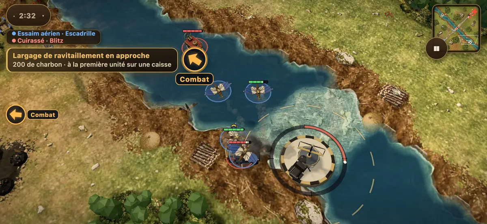
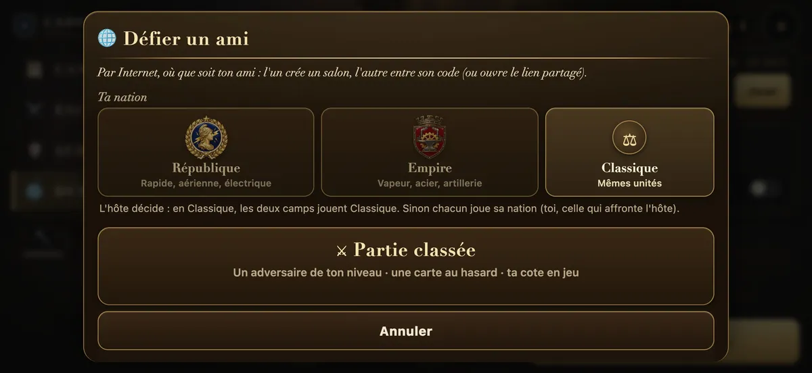
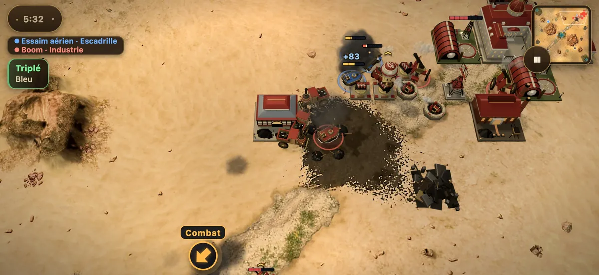
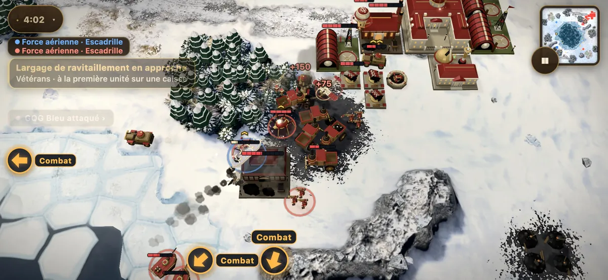
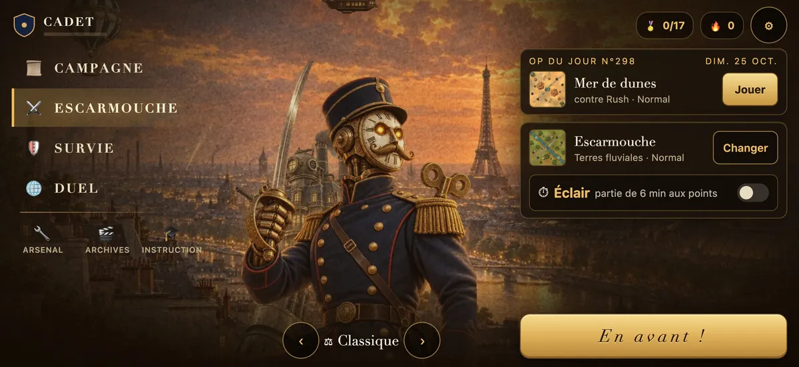

La République
Liberté, électricité, audace
Rapide, aérienne et électrique : Blériot et Montgolfières, canons Branly, sapeurs-électriciens. Elle frappe vite et loin.


Le Cinématographe présente
L’Europe s’arme de vapeur, d’acier et de radium. Menez vos armées du bout du doigt, à travers une campagne en trois actes ou contre un adversaire en ligne.
Gratuit · Sans publicité · Sans achat intégré · iPhone, Android et ordinateur
Pour la gagner, il faudra du courage…
et beaucoup de panache.
La bataille au bout du doigt
Pas de souris à imiter ni de boutons minuscules : tout se commande au doigt, et une partie tient dans un trajet de métro.

Touchez une unité, entourez un régiment ou prenez toute l’armée d’un coup.
Dessinez le chemin de vos troupes sur la carte : elles le suivent, contournent et chargent.
Bâtissez, récoltez le charbon, lancez l’assaut : une escarmouche se joue en dix minutes, un Éclair en six.
Deux nations
Chaque nation a ses unités, ses bâtiments et sa façon de gagner.
Liberté, électricité, audace
Rapide, aérienne et électrique : Blériot et Montgolfières, canons Branly, sapeurs-électriciens. Elle frappe vite et loin.

Vapeur, acier, artillerie
Lourd et implacable : Creusot blindés, mortiers de 280, Gargantuas de fonte. Il avance lentement, mais rien ne l’arrête.
Ou le mode Classique : les deux camps jouent les mêmes unités, à armes égales.
La Campagne de 1900
Intertitres, grain de la pellicule, fanfare de cuivres : chaque mission s’ouvre et se ferme sur ses cartons, et votre arsenal grandit de l’une à l’autre.

Têtes de pont, caravanes de radium, côtes de granit : la guerre commence.

Pendant ce temps, en Carbonie… La guerre monte dans les montagnes.

Tout se joue sous la tour de M. Eiffel.
Le duel en ligne
Les deux téléphones jouent la même bataille, ordre pour ordre, où que vous soyez.

Et aussi
Contre l’IA, en trois difficultés et plusieurs personnalités de commandant.
Une partie de six minutes, gagnée aux points.
Tenez le plus longtemps possible face aux vagues.
Une nouvelle bataille chaque jour, la même pour tout le monde.
Ruée vers l’or, canons de verre… et des cartes générées à l’infini.
Revoyez vos batailles et leurs temps forts, au ralenti.
Sur le front



Oui. Pas de publicité, pas d’achat intégré, pas d’abonnement. Le jeu entier est jouable gratuitement.
Sur iPhone, Android et ordinateur, directement dans le navigateur, sans rien installer. L’app iPhone arrive sur l’App Store : en attendant, sa bêta est ouverte à tous sur TestFlight.
Non. Le jeu crée un compte anonyme tout seul pour sauvegarder votre progression dans le nuage. Vous pouvez le rattacher à « Se connecter avec Apple » pour la retrouver sur vos autres appareils.
Duel → Créer un salon, puis envoyez le code de quatre lettres ou le lien. Votre ami le rejoint depuis son téléphone, où qu’il soit.
Une fois chargé, le jeu tourne sans connexion pour la campagne, les escarmouches et la survie. Seuls les duels en ligne et le classement ont besoin d’Internet.
Aucune donnée personnelle : ni nom, ni e-mail. Seulement votre progression, votre cote en partie classée et des compteurs anonymes. Tout est détaillé dans la politique de confidentialité.
Le front vous attend. Une partie suffit pour comprendre.